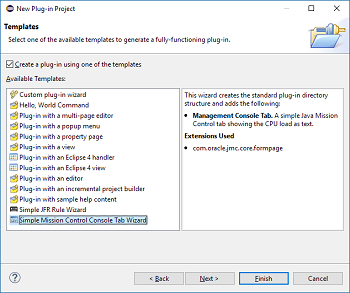

|
General
|
| JMC 8.0 - Major New Release! |
This is a major new release of Java Mission Control. All binary build of the JMC application using the
Eclipse 2020-09 platform will now require JDK 11+ to run, but can be used with OpenJDK 8u272+ and Oracle JDK 7u40+.
It can also open and visualize flight recordings from JDK 7 and 8.
|
|
| Eclipse 4.16 support |
The Mission Control client is now built to run optimally on Eclipse 2020-06 and later. To install Java Mission
Control into Eclipse, go to the
Java Mission Control update site
.
|
|
| Supported Plug-ins |
There are now several
supported
plug-ins for use with Java Mission Control. Go to "Install New Software" in Java Mission Control
(or Eclipse) to
install. If running as plug-ins inside of Eclipse, do not forget to add the
update site for supported plug-ins
.

|
|
| Experimental Plug-ins |
The JMC team is still sharing
experimental
plug-ins on the experimental update site. Go to "Install New Software" in Java Mission Control
(or Eclipse) to
install. If running as plug-ins inside of Eclipse, do not forget to add the
update site for experimental plug-ins
.

|
|
| Minor bugfixes and improvements |
There are hundreds of minor fixes and improvements in this release.

|
|
Java Flight Recorder (JFR)
|
| Flame Graph View Improvements |
The Flame Graph View is now available in the standard perspective. It can now be configured to be
rendered either as an icicle graph or a flame graph, and the tool tips have been improved. Click on anything
representing a selection of events to get the aggregate of stack traces represented by that selection rendered in
the Flame Graph View.

|
|
| New Graph View |
An early access version of a Graph View is now available. The Graph View will show a directed graph
where the individual methods are nodes in the graphs, and the edges will represent calls from one method to another.
The size of the node will represent the "self" contribution, and the thickness of an edge will correlate with the
number of calls from one method to another in the events. To open up the graph view, go to Window | Show view |
Other..., then select Mission Control / Graph View. Once the Graph View has opened, it can be docked where you want
it to be, or dragged out into a new top level window which can be handled by your window manager. Currently there is
no graph pruning, and large graph will take a very long time to layout and render, during which the UI will freeze.
Therefore we've imposed a user configurable limit on the number of nodes a graph can have for now.

|
|
| Predecessors and Successors |
The predecessors and successors tabs have been brought back to the Method Profiling page. This means
that it is now easy to select a method and easily see wherever that method was called from, and to see what was then
called from that method. This is a temporary solution until we have a separate Butterfly/Sandwich view where any
selection of a method in a set of events can be rendered in a separately configured view.

|
|
Management Console
|
| Extending the Console |
The API for extending the management console has been simplified and improved. The easiest way to see
the new API in action is to create a
console extension using the Mission Control PDE plug-in inside of Eclipse.

|
|
Supported Plug-ins
|
| The Metadata Plug-in (JFR) |
This plug-in shows the metadata available in a recording. This is quite useful when developing rules, as
information such as the event type identifiers
are typically required. That said, sometimes just looking at the
description for an attribute or event type can be
helpful to better understand the data.

|
|
| The JavaFX Plug-in (JFR) |
This plug-in provides a special page for improved visualization of JavaFX events. It will show
information from the pulse logger. For each individual
pulse details, such as the name and duration of the phases,
will be shown.

|
|
| The WebLogic Plug-in (JFR) |
This plug-in provides a set of pages for analysis of applications deployed in WebLogic Server. A wide
range of information is available, such as servlet executions,
EJB calls, JDBC calls, JTA transactions and much more.
Of course, all that information can be correlated to what is
going on in the Java runtime, providing a powerful
diagnostics and profiling environment for WebLogic Server. This
plug-in also contains JFR parser extensions and rules
for automated analysis of WLS performance.

|
|
JMC Agent
|
| Agent 1.0.0 |
This is the first version where we build and release the JMC agent. The JMC agent is a byte code
instrumentation agent, making it easy to declaratively generate JFR events from most methods, even methods for which
you do not have the source code available. Either configure the agent with an XML configuration field, or use the
MBean to dynamically change the instrumentation whilst the application is running.

|
|
| Converter Functions |
Now any public static method can be used to convert objects of a specific type to one of the types
supported by flight recorder. The converter to use must be explicitly declared per recorded data.

|
|
Bug Fixes
|
|
Area: JFR
Issue: 5734
Synopsis: Overflow in stacktrace tooltips fixed
On Mac, the tooltips shown for the stacktraces could overflow. This is now fixed.
|
Known Issues
|
|
Area: General
Issue: 4270
Synopsis: Hibernation and time
After the bugfix of https://bugs.openjdk.java.net/browse/JDK-6523160 in JDK 8, the
RuntimeMXBean#getUptime() attribute was re-implemented to mean "Elapsed time of JVM process", whilst it previously
was implemented as time since start of the JVM process. The uptime attribute is used by JMC, together with
RuntimeMXBean#getStartTime(), to estimate the actual server time. This means that time stamps, as well as remaining
time for a flight recording, can be wrong for processes on machines that have been hibernated.
|
|
Area: General
Issue: 4270
Synopsis: Hibernation and time
After the bugfix of https://bugs.openjdk.java.net/browse/JDK-6523160 in JDK 8, the
RuntimeMXBean#getUptime() attribute was re-implemented to mean "Elapsed time of JVM process", whilst it previously
was implemented as time since start of the JVM process. The uptime attribute is used by JMC, together with
RuntimeMXBean#getStartTime(), to estimate the actual server time. This means that time stamps, as well as remaining
time for a flight recording, can be wrong for processes on machines that have been hibernated.
|
|
Area: JFR
Issue: 7122
Synopsis: Rules evaluation never complete
Sometimes the rules evaluation may never complete for the GC rules.
|
|
Area: JFR
Issue: 7071
Synopsis: JMC can't attach to jlinked JVMs
This one is still under investigation, but it seems JMC can't attach to certain jlinked images.
|
|
Area: JFR
Issue: 7068
Synopsis: JfrRecordingTest (uitest) hangs on the automated analysis page
Trying to run uitests on Fedora hangs on JfrRecordingTest.
|
|
Area: JFR
Issue: 7007
Synopsis: Unable to edit run configurations for eclipse project after installing JMC plugin
Avoid installing the experimental JMC launcher plug-in into Eclipse until this problem has been
resolved.
|
|
Area: JFR
Issue: 7003
Synopsis: The graph view does not work on Windows
This is due to a bug in the chromium browser plug-in used by JMC on Windows. See the issue for more
information.
|
|
Area: JFR
Issue: 6265
Synopsis: JMC crashes with Webkit2+GTK 4
See the issue for more information.
|
|
Area: JFR
Issue: 6265
Synopsis: JMC crashes with Webkit2+GTK 4
See the issue for more information.
|
|
Area: JFR
Issue: 5412
Synopsis: Dragging and dropping a JFR file into an open analysis page does not work
The expected behaviour would be to open the recording whenever a file is dropped in the editor area, but
the behaviour will be defined by the embedded browser component, and not very useful.
|
{kind=link}
{kind=link}


{kind=link}